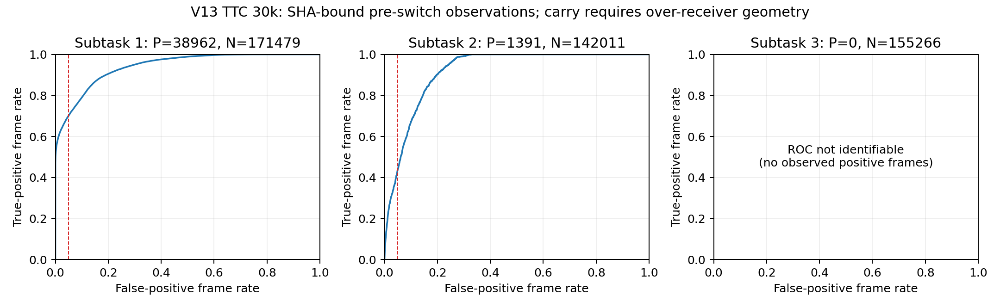

新实验尚未完成，不发布部分成功率。附着旧输入配对与 D1–D3 均单列诊断；缺少完整准入证据的配置不进入正式 v1 比较表。
| 配置 | 已验收／计划 | 状态 |
|---|
| 分组 | 改动 | 计划 | 状态 |
|---|
对照复用已完成的 V13 Mem-0 30k、h4、seed0：24/100，左侧 1/50，右侧 23/50；平均完成阶段 1.70。它是历史背景；发现运行时初始化差异后，已在任何D结果前冻结补充100条D0同运行时对照，干预和解读阈值保持不变。配对效应将对照D0，不能把历史24/100直接当作纯输入干预的对照。
D2a 只置零动作分支图像，完成判定与 Planner 保留原图；D2b 才把全部图像置零。D3 在归一化前加 0.01rad 高斯噪声，同一物理帧刷新复用噪声，独立随机流不改变模型随机数。
解读规则：±3cm 较±1cm下降至少10pp、D2a差值在±5pp内、D3下降至少10pp，作为支持 state 依赖的联合信号；报告配对置信区间，100条不能仅凭“不显著”证明等价。D2a下降至少10pp则支持动作分支使用图像，其余判为混合或不足。冻结的完整规则
ours V13：20k的4/8步为16/500（3.2%）和20/500（4.0%）；30k为78/500（15.6%）和73/500（14.6%）。全部5seed、原1cm条件、unknown=0，权重SHA及逐seed/左右结果已更新交接记录11、12。旧协议不混入修复后v1成绩。
最新30k在同一批10条训练episode上的手臂RMSE为0.0142rad，20k参照为0.0198rad，通过1.5倍门槛。固定输入黑图诊断改变了动作输出（RMS 0.37–0.58rad），不能据此替代闭环成功率，500条诊断尚无完整结果。旧验收phase1仅表示稳定抓握，不等价于完整抓取搬运子任务。
V13和latest归一化四组数值完全相同，区别在元数据路径。共享一份模型的六路顺序执行核心已通过24组逐位动作对照；完整HTTP服务和常驻reset尚未准入，未用于正式成绩。
训练侧缩放版20条冒烟已通过，左右各10，物理阶段0仅1条，阶段A已开始。早期Probe渲染检查十时点MAE均低于0.61/255；实际R4补查左侧五帧最高0.584/255，右侧因物理失败中止、未凑齐五帧；新候选同时采用训练侧缩放，两项变化均明确记录。专家回放改为左右各5条、两种执行链分别验收，不把单条失败解释成模型结论。
| 回放 | 0% | 25% | 50% | 75% | 100% |
|---|
TTC原版800条离线分析：第二子任务 p99×2.0 仍提前101/731（13.8%），未达≤5%；暂保留关闭第二阶段超时的候选，第三阶段保持默认。修复缩放日志的校准尚未完成，不宣称救回轨迹。
